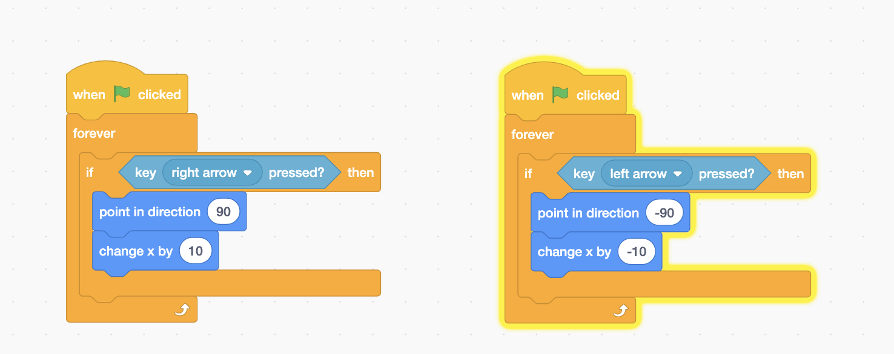
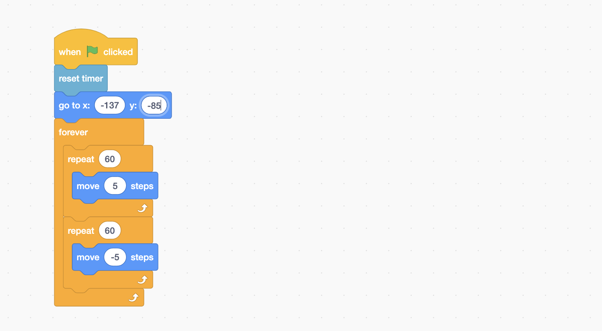

Practice Lesson
Let's Make a Game
1.Creating your game - "The Moving Platform"
In this game you want your character to stay on the platform and not fall off your screen. Do this by using the "left and right key" to move your sprite left and right on the platform. The goal is to make your spite not fall off the screen.
1. Create a new scratch file on scratch. With Scratch, you can program your own interactive stories, games, and animations and share your creations with others in the online community.
2. Name your scratch file. It can be your name or anything relevant to your game. Example: "Moving Platform Game"
2. Create Your Setting
1. Set your back drop by clicking the picture icon on the bottom right hand corner. The possibilities are endless! Your setting can be a underground cavern, under the sea and more!
2. Now add your sprite. A sprite is what you will be adding functionality to (your character in the game). You can do this by clicking on the cat at the bottom right hand corner.

3. Add Functionality
Now it's time to do your coding
1. For your sprite character add an event starter in "events".
2. Add controls. For the purpose of this game we want our sprite to move left and right. Do this by going into your "controls" and attaching a forever loop onto your event starter. This means for as long as you do an action the event will keep occurring.
3. Within the forever loop add a if statement from the "controls". In your if statement add a sensing control by using the "when key is pressed" function.
4. In the if statement add motion controls. To move your sprite to the right use "point in the direction 90" and "change x by 10".
5. Repeat steps 1-4 with the exception that in order to move your sprite to the left you will use "point in the direction -90" and "change x by -10"
4. Try It Yourself
1. Add a platform object sprite
2. Add a event starter event for your platform sprite and in sensing add a "reset timer function function". This means if you click the event starter the game will restart.
Your turn: Try to make the platform sprite object move left and right. Hint: use the "go to x: and y: and "move __ steps" functions.
